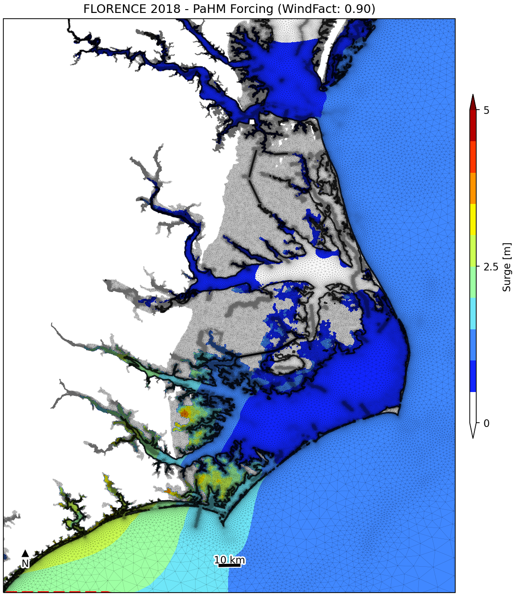

|
|
version 1.0.0
Parametric Hurricane Modeling System
|

|
|
|
version 1.0.0
Parametric Hurricane Modeling System
|
|
In this section the developed modeling system and its associated modeling components are evaluated under realistic atmospheric and ocean conditions, varied flow domains and coupling configurations so the performance of \(\logo{PaHM}\) can be analyzed. Although the individual modeling components of \(\logo{PaHM}\) have been evaluated, the overall model performance still needs evaluation and verification. Switching on and off the different modeling components shows the relative performance of each modeling component with respect to each other and to the problem being investigated. \(\logo{PaHM}\)'s outputs are: \(\itchar{a}\) 10-m wind speed, \(\itchar{b}\) wind direction and \(\itchar{c}\) atmospheric pressure reduced to mean sea level \(\plogo{MSLP}\).
Only parametric statistical tests are used in the performance evaluation of the developed model that include (a) the mean \(\plogo{m}\) of the differences between the calculated and the measured or observed data sets, (b) the standard deviation \(\plogo{SD}\), (c) the root mean square differense \(\plogo{RMSE}\), (d) the coefficient of determination \((R^2)\), (e) the bias \(\plogo{bias}\), (f) the scatter coefficient \(\plogo{SI}\), (g) the Willmott (2012) skill \(\plogo{WS12}\) and (h) the Nash and Sutcliff (1970) skill \(\plogo{NS}\).
a) Mean: The mean of the differences between the modeled and measured data provides a gross overall measure of the model performance and is calculated as:
\begin{equation} m=\frac{\sum\limits_{i = 1}^{n}\big(M_{i}-O_{i}\big)}{n} \label{eqn_mean} \end{equation}
where \(n\) is the total number of observation or modeled points, \(M_{i}\) are the modeled and \(O_{i}\) are the observed values of each evaluated variable. The smaller the mean difference the better the agreement between the model and the observed values, with a value of zero denoting absolute agreement.
b) Standard Deviation: The standard deviation \(\plogo{SD}\) is a measure of the distance of the difference between the calculated and observed data from the mean difference. Small standard deviations indicate that the differences are closer to the mean. The standard deviation is calculated as:
\begin{equation} SD=\sqrt{\frac{\sum\limits_{i = 1}^{n}\big[\big(M_{i}-O_{i}\big)-m\big]^{2}}{{n}}} \label{eqn_std} \end{equation}
c) Root Mean Square Differense: The root mean square difference \(\plogo{RMSE}\) is another test of the overall model performance that measures how close the modeled value of a variable is to the observed value. Mathematically, the test is defined as:
\begin{equation} RMSE=\sqrt{\frac{\sum\limits_{i = 1}^{n}\big(M_{i}-O_{i}\big)^{2}}{{n}}} \label{eqn_rmse} \end{equation}
The differences between the modeled and observed data are squared so that more weight is given to larger errors.
d) Coefficient of Determination: The coefficient of determination \(R^2\), where \(R\) is the correlation coefficient, indicates the proportion of the variance in the dependent variable that is predicted by linear regression and the independent variable. In general, a high \(R^2\) value indicates that the model is a good fit for the data. An \(R^2 = 0.62\), indicates that \(62 \%\) of the variation in the outcome has been explained. A value of 1 would indicate that the regression line represents all of the data (the best fit) while, a value of 0 shows no association at all. Note that the coefficient of determination shows only the magnitude of the association, not whether that association is statistically significant.
\begin{equation} R=\frac{\sum\limits_{i = 1}^{n}\big(O_{i}-\overline{O}\big)\big(M_{i}-\overline{M}\big)} {\sqrt{\sum\limits_{i = 1}^{n}\big(O_{i}-\overline{O}\big)^2\big(M_{i}-\overline{M}\big)^2}} \label{eqn_corr} \end{equation}
where: \(\overline{M} = (1/n) \sum\limits_{i = 1}^{n}M_{i}\) is the mean of the modeled values and \(\overline{O} = (1/n) \sum\limits_{i = 1}^{n}O_{i}\) is the mean of the observation values.
e) Model Bias: Bias is the tendency of a statistical estimator to overestimate or underestimate a parameter. The bias of a statistical estimator is the difference between the expected value of the statistic and the true value of the sample (population) parameter. If the bias is close to zero then the statistical estimator is an unbiased estimator, otherwise it is considered a biased estimator. The statistical estimator used here is the sample or population mean.
\begin{equation} bias=\overline{O}-\overline{M} \label{eqn_bias} \end{equation}
f) Scatter Index: The scatter index \(\plogo{SI}\) is calculated by dividing the \(\logo{RMSE}\) with the mean of the observations and multiplying it by 100 (percent):
\begin{equation} SI=\frac{RMSE}{\overline{O}} \label{eqn_si} \end{equation}
where \(\logo{SI}\) is the percentage of \(\logo{RMSE}\) with respect to the mean of the observations that is, the percentage of expected error for the parameter.
g) Willmott Skill Index: The evaluation of model performance, that is the comparison model estimates with observed values, is a fundamental step for model development and use. This validation process includes criteria that rely on mathematical measurements of how well model results simulate the observed values. The parameter \(\plogo{WS12}\), called index of agreement, is a relative average error and bounded measure. The best agreement between model results and observations will yield a skill of one while, a value of \( \leq 0\) denotes a complete disagreement. This statistic is calculated using the following equations:
\begin{equation}\left. \begin{aligned} &\qquad SM1 = \sum\limits_{i = 1}^{n}\left\lvert O_{i}-M_{i} \right\lvert \;\text{;} && SM2 = \sum\limits_{i = 1}^{n}\left\lvert M_{i}-\overline{O} \right\lvert \left\lvert O_{i}-\overline{O} \right\lvert \\ WS12 &= 1.0 - SM1 / (2.0 \cdot SM2) &&\text{for}\quad SM1\leq 2.0 \cdot SM2 \\ WS12 &= 2.0 \cdot SM2 / SM1 - 1.0 &&\text{for}\quad SM1 > 2.0 \cdot SM2 \end{aligned}\quad\right\} \label{eqn_ws12} \end{equation}
The range of qualification for the Willmott's skill index is given in the following table:
\begin{equation}\left. \begin{aligned} 0.8 < &WS12 \leq 1.0& \text{Excellent} \\ 0.6 < &WS12 \leq 0.8& \text{Good} \\ 0.3 < &WS12 \leq 0.6& \text{Reasonable} \\ 0.0 < &WS12 \leq 0.3& \text{Poor} \\ &WS12 \leq 0.0& \text{Bad} \end{aligned}\quad\right\} \label{eqn_skill_quality} \end{equation}
h) Nash and Sutcliff Skill Index: The Nash and Sutcliff skill index is similar to the Willmott's skill index and it is calculated as:
\begin{equation}\label{eqn_ns} NS=1.0 - \frac{\sum\limits_{i = 1}^{n}\big(M_{i}-O_{i}\big)^2} {\sum\limits_{i = 1}^{n}\big(O_{i}-\overline{M}\big)^2} \end{equation}
For a perfect model with an estimation error variance equal to zero, the Nash and Sutcliffe index equals 1. Values of the Nash and Sutcliffe index close to 1, suggest a model with more predictive skill. The range of qualification presented in the case of the Willmott's skill index can be used for the Nash and Sutcliff skill index case as well.
All the above tests give information on the size, but not of the nature of the error, which make them adequate measures for a preliminary model evaluation. However, a deeper analysis might require specific tests that can reveal the nature of the errors and help with future model improvements.
Link to the picture: Figure [1]

|
|
| (a) | (b) |
|
|
|
|
The coupled modeling approach described here allows to address the impacts of extreme storm events such as hurricanes on coastal areas. The HSOFS modeling system is applied and evaluated for Hurricane Florence on the Eastern coast of the US that includes the important basins of Delaware Bay, Chesapeake Bay and the Carolinas. While individual modeling components (ADCIRC, WAVEWATCH III) have already been evaluated successfully using standard statistical measures, PAHM is currently evaluated as part of the overall HSOFS evaluation. Initial HSOFS simulations show promising results on predicting total water level and flood inundation.
|
|
|  |
|
|
|
|
|
|
|
|